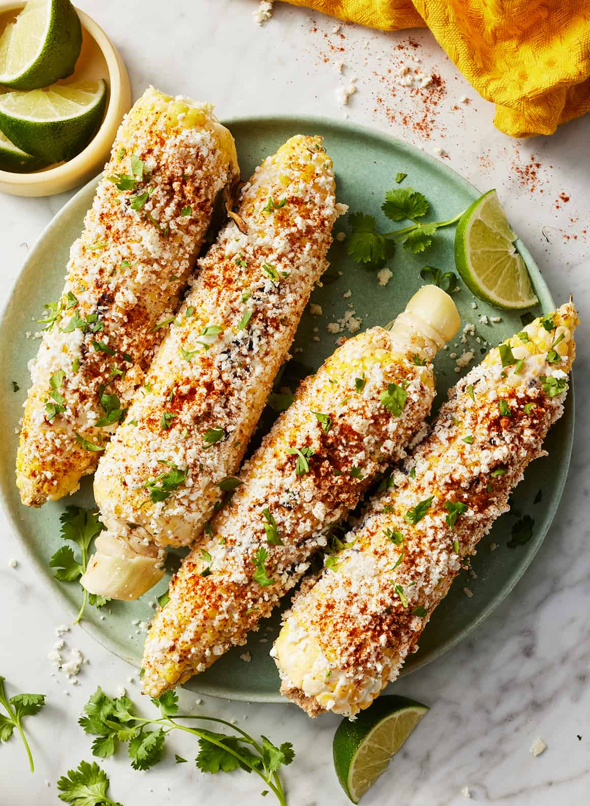

Nestled in the heart of Mexico, Puebla is celebrated not only for its stunning architecture and rich history but also for its vibrant culinary scene. Known as the birthplace of iconic dishes like molé poblano, Puebla boasts a diverse array of flavors and ingredients that reflect the region's indigenous heritage and colonial influences. From the savory richness of chiles en nogada to the comforting warmth of cemitas, each dish tells a story of tradition and local culture. The state’s cuisine is deeply intertwined with its history, showcasing the fusion of pre-Hispanic and Spanish culinary practices that have evolved over centuries. As we delve into the delicious offerings of Puebla, we will explore the standout dishes that define its gastronomy and how they connect to the rich cultural tapestry of this remarkable region.

One of the most iconic dishes to emerge from Puebla is mole poblano, a rich and complex sauce that has become a staple of Mexican cuisine. Its origins date back to the colonial period, with stories suggesting that it was created in the 17th century by nuns at the Convent of Santa Rosa, who blended indigenous ingredients with European spices in an effort to impress a visiting bishop. Mole poblano is renowned for its deep, earthy flavor, which comes from an intricate combination of ingredients, including dried chiles (such as ancho and pasilla), chocolate, nuts (typically almonds or peanuts), seeds, spices (like cinnamon and cloves), and tomatoes. The dish often features chicken or turkey, which is simmered in the sauce until tender, allowing the flavors to meld beautifully. While mole poblano is commonly served during special occasions and festivities, its widespread popularity has made it a beloved staple throughout Mexico. This dish exemplifies the fusion of indigenous and colonial influences that define Puebla's culinary heritage, making it not just a meal but a celebration of the region's rich history.
Iconic Dishes for Holiday Gatherings
Puebla is renowned for its rich culinary tradition, especially during holidays and celebrations. Here are three famous Poblano dishes that are commonly enjoyed during festive occasions, along with their significance:
Mole Poblano: As mentioned earlier, mole poblano is a quintessential dish from Puebla, often served during major celebrations such as weddings, birthdays, and religious holidays like Día de los Muertos (Day of the Dead). Its preparation involves a variety of ingredients that reflect the region's history of blending indigenous and Spanish influences. The complexity and depth of flavor symbolize the richness of Pueblan culture, making it a dish that holds a special place in the hearts and homes of those celebrating.
Chiles en Nogada: This dish is uniquely tied to Mexican Independence Day celebrations in September. It consists of poblano peppers stuffed with a mix of ground meat, fruits, and spices, topped with a creamy walnut sauce and sprinkled with pomegranate seeds—representing the colors of the Mexican flag: green, white, and red. Chiles en nogada embodies national pride and the spirit of independence, making it a festive favorite that showcases the flavors of Puebla while also celebrating Mexican heritage.
Tacos Arabes: A beloved street food originating from Puebla, tacos árabes are made with marinated pork (often cooked on a vertical spit like shawarma) served in a flour tortilla. This dish is commonly enjoyed during family gatherings and casual celebrations. The influence of Middle Eastern cuisine in Puebla highlights the area’s diverse cultural exchanges. Tacos árabes reflect the vibrancy and adaptability of Poblano cuisine, where traditional flavors are creatively integrated, making them a must-have during festive occasions.
These dishes not only satisfy the palate but also carry cultural significance, connecting families and communities to their roots and traditions during celebrations.
The Importance of Corn in Mexican Cuisine
Corn holds profound significance in the state of Puebla, Mexico, both culturally and economically. As a staple crop that dates back thousands of years to pre-Hispanic civilizations, corn is deeply woven into the fabric of Puebla's culinary traditions. It is revered not only as a source of sustenance but also as a symbol of identity and heritage. The region's fertile lands are ideal for cultivating various types of corn, which are then transformed into an array of traditional dishes that have been passed down through generations. Puebla's gastronomy showcases the versatility of corn, prominently featured in many beloved recipes that embody the flavors and history of the region.

Here are five dishes and snacks that prominently use corn in Puebla:
- Tacos de Maíz
- Tacos de maíz are a quintessential Mexican street food made from soft corn tortillas that are a staple of Puebla's culinary culture. These tortillas are typically handmade from nixtamalized corn, giving them a unique texture and flavor. Filled with a variety of savory ingredients, such as marinated meats, beans, cheese, or grilled vegetables, tacos de maíz can be customized to suit many tastes. They are often garnished with fresh cilantro, diced onion, and a squeeze of lime, offering a perfect balance of flavors that exemplify Pueblan gastronomy.
- Mole Poblano
- Mole poblano is a complex and rich sauce that is perhaps one of Puebla's most famous contributions to Mexican cuisine. It is made with a blend of ingredients including various types of chili peppers, spices, nuts, and, importantly, ground corn, which adds thickness and depth to the sauce. Traditionally served over chicken or turkey, mole poblano is celebrated for its intricate flavors and deep, dark color. It often serves as a centerpiece for festive occasions, showcasing the rich culinary heritage of Puebla.
- Tlacoyos
- Tlacoyos are delightful oval-shaped masa cakes made from corn, traditionally filled with ingredients like refried beans, cheese, or potatoes. These cakes are either grilled or fried until slightly crispy on the outside while remaining soft on the inside. Served with toppings such as salsa, sour cream, or avocado, tlacoyos are a popular street snack that offers a comforting taste of Pueblan tradition. They reflect the region's culinary ingenuity in using corn in varied forms.
- Elote
- Elote is a beloved street food in Puebla, consisting of grilled corn on the cob, typically coated with a mixture of mayonnaise, cheese, chili powder, and lime juice. This simple yet satisfying snack is often found at street stalls and markets, where vendors skillfully prepare the corn on an open flame. The combination of smoky, creamy, and spicy flavors creates a robust taste experience that locals and tourists alike adore. Elote not only highlights the versatility of corn but also evokes the lively atmosphere of Pueblan street culture.
- Chalupas
- Chalupas are small, thick corn tortillas that are lightly fried to achieve a delightful crispiness. Traditionally, they are topped with a variety of ingredients, including shredded meat, fresh salsa, and chopped onions. The name "chalupa" is derived from the boat-like shape of the tortilla, which holds the toppings beautifully. Served as a snack or appetizer, chalupas offer a burst of flavor with each bite and pay homage to Puebla's rich culinary artistry. They are often enjoyed during festive gatherings and family meals.